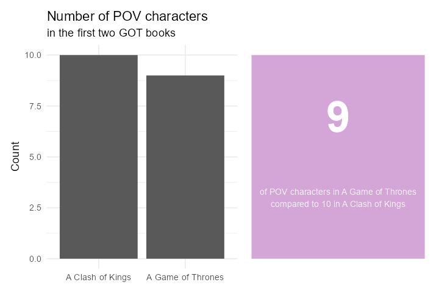
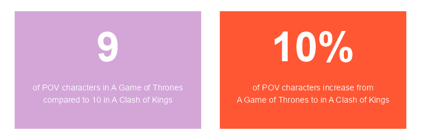
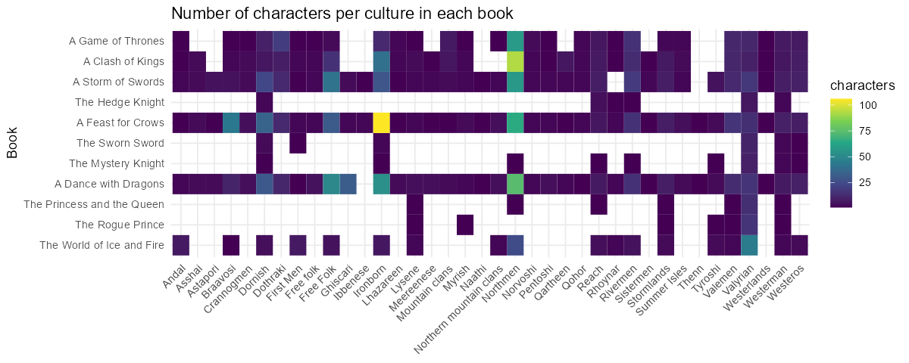
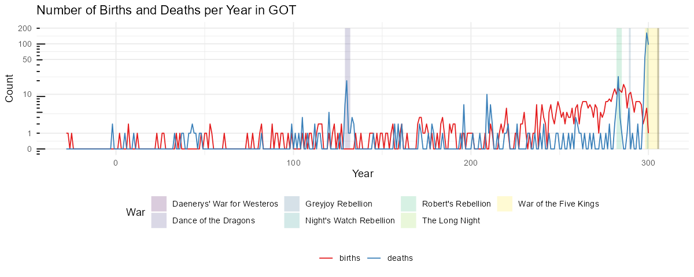
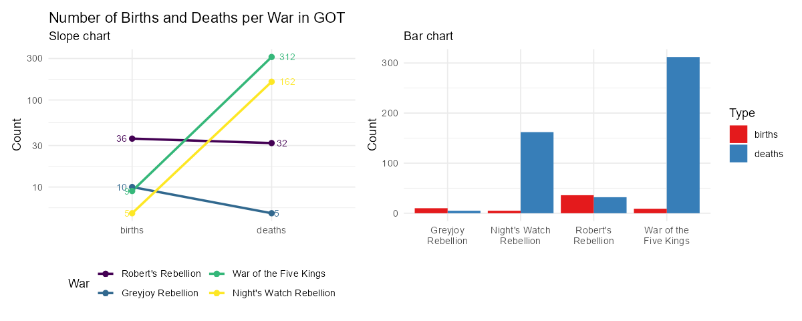

24 Helstu gröf og töflur
25 Myndræn framsetning
Myndræn framsetning gagna er áhrifarík leið til að draga fram lykilatriði í gögnum og auðvelda lesendum að skilja flókin sambönd. Grafískir miðlar eins og línurit, súlurit og dreifirit veita oft skýra mynd af þróun, mynstrum og tengslum. Hins vegar þarf að vanda vel til verka þegar ákvörðun er tekin um að nota graf til að sýna upplýsingar, því í sumum tilvikum getur einföld framsetning með texta verið betri lausn.
Í öllum sýnidæmum sem koma hér á eftir, þá er kóðinn skrifaður í R með ggplot2 pakkanum og öðrum viðeigandi aukapökkum. Hægt er að nálgast kóðann hér.
25.1 Undantekning: Fáar tölur
Ef þið eruð með eina eða tvær tölur til að sýna, sleppið því að nota graf. Þegar aðeins er verið að miðla einni eða tveimur tölum er sjaldan þörf á grafískri framsetningu. Yfirleitt gera gröf ekki gagn í þessu tilfelli og geta jafnvel verið villandi. Graf fyrir svo fáar tölur getur virst óþarfa flókið og gefið til kynna meiri upplýsingar eða dýpt en raunverulega er til staðar.
Notið frekar tölurnar sjálfar ásamt nokkrum orðum. Einföld og skýr textafræðileg framsetning er oft nægileg og dregur betur fram upplýsingar en flókið graf. Með því að sýna tölurnar beint í texta er minni hætta á misskilningi og það er auðveldara fyrir lesandann að átta sig á gildi þeirra.
Til dæmis má líta á mynd eins og þessa sem sýnir fjölda sögupersóna fyrstu tveimur GOT bókunum, Game of Thrones og Clash of Kings:

Ef tilgangurinn væri aðeins að miðla einni eða tveimur tölum, þá væri nóg að segja einfaldlega: „9 sögupersónur í Game of Thrones og 10 í Clash of Kings.“ frekar en að setja upp graf eða töflu.
Það er mikilvægt að gæta þess að framsetningin sé ekki villandi. Sérstaklega þarf að varast það að sameina tvær tölur í eina, þar sem mikilvægar upplýsingar geta auðveldlega tapast fyrir lesanda. Það getur leitt til rangrar túlkunar eða gert lesendum erfiðara fyrir að skilja gögnin á réttan hátt.

Hér til dæmis væri erfitt að túlka hvort 10% aukning af sögupersónum í Clash of Kings sé eðlileg eða óeðlileg, þar sem það er ekki ljóst hvort aukningin sé frá 9 til 10 eða 90 til 100.
Athugasemd: Með því að íhuga hvort graf sé raunverulega nauðsynlegt getið þið sparað tíma og komið skilaboðum á framfæri með meiri nákvæmni.
25.2 Gagnatafla - Data Table
Töflur eru algeng leið til að sýna gögn og geta verið mjög áhrifaríkar í réttu samhengi. Hins vegar er mikilvægt að vita hvenær best er að nota töflur og hvernig þær eru hannaðar á áhrifaríkan hátt.
Nánar um Data Table á Storytelling with data.
25.2.0.1 Hvenær á að nota töflu?
- Blandaður áhorfendahópur: Töflur henta vel þegar við erum með fjölbreyttan áhorfendahóp, þar sem hver og einn getur leitað upp upplýsingar sem eru mikilvægar fyrir hann.
- Mismunandi einingar: Ef gögnin samanstanda af mörgum mismunandi mælieiningum, eins og í samantektum eða lýðfræðilegum upplýsingum, getur tafla verið betri en graf.
- Áhorfendur þurfa að lesa línu fyrir línu: Töflur eru sérstaklega gagnlegar í fjármálum og bókhaldi, þar sem notendur eru vanir að lesa og greina línur.
- Aðgengi að öllum gögnum: Ef þú vilt gefa áhorfendum möguleika á að skoða öll gögnin í smáatriðum, er tafla oft góður kostur.
25.2.0.2 Hvenær á að sleppa töflum?
- Í kynningum: Þú gætir tapað athygli áhorfenda ef þeir eru að lesa töflu á meðan þú talar. Þá er betra að nota graf eða aðra myndræna framsetningu.
- Þegar þú vilt sýna mynstur: Ef markmiðið er að draga fram mynstur eða þróun í gögnum, eru gröf oft betri þar sem þau auðvelda skilning á heildarmyndinni.
25.2.0.3 Hönnun góðrar töflu
Til að hanna fallega og nothæfa töflu er mikilvægt að einfalda hana og gera hana auðlesna:
- Notaðu ljósar línur: Þykkar svartar línur geta dregið óþarflega mikla athygli frá gögnunum. Ljósgráar þunnar línur eru betri valkostur.
- Fjarlægðu óþarfa skugga og umgjörð: Of miklar útlínur eða skyggingar geta gert töfluna óþarflega þunga.
- Bættu við sjónrænum þáttum: Það getur verið gagnlegt að bæta við sjónrænum þáttum eins og litaðri bakgrunnsmerkingu eða línum til að undirstrika mikilvægar upplýsingar.
25.2.0.4 Verkfæri til töflugerðar
Til að búa til fallegar töflur í R, getur þú notað pakkana kableExtra eða gt. Í LaTeX getur þú nýtt þér pakkana booktabs og tabu til að gera töflur sem eru vel uppsettar og fagurfræðilega heillandi.
25.2.1 Hitakort - Heatmap
- Góð leið til framsetningar: Hitakort eru áhrifarík leið til að bæta sjónrænum vísbendingum inn í töflur, þar sem þau geta hjálpað áhorfendum að draga saman aðalatriðin.
- Beinir athygli: Með því að nota mismunandi litablæbrigði er hægt að beina athygli áhorfenda að mikilvægustu gögnunum.
- Tölur í boxum: Einnig er hægt að setja tölur inn í reitina á hitakortinu, en það getur stundum orðið of mikið af upplýsingum og gert framsetninguna of þétta.

Þetta hitakort sýnir fjölda sögupersóna eftir menningu (culture) í hverri bók í Game of Thrones seríunni. Á lóðrétta ásnum eru bækurnar í réttri röð, frá fyrstu til síðustu, og á lárétta ásnum eru mismunandi menningarhópar. Flísarnar (geom_tile) tákna fjölda sögupersóna fyrir hvern menningarhóp í hverri bók. Liturinn á flísunum endurspeglar fjöldann, þar sem dekkri litir tákna fleiri persónur.
25.3 Dreifirit - Scatter Plot
Dreifirit (scatter plot) er öflug leið til að sýna samband milli tveggja tölulegra breyta. Þetta graf er mikið notað í vísindasamfélaginu og atvinnulífinu til að skoða hvort tengsl séu milli tveggja breyta og hvort ákveðin mynstur eða útlagagildi komi í ljós.
Dreifirit nýtast vel til að greina gögn á rannsóknarstigi, en þau geta líka verið gagnleg við miðlun upplýsinga þegar þau eru rétt hönnuð. Til dæmis er oft notað litakóða eða bæta við meðaltalslínum til að gera mynstrin enn skýrari og aðgreina þau gildi sem skera sig úr frá meðaltalinu.
25.3.0.1 Kostir dreifirits
- Sýna samband tveggja breyta: Hver gagnapunktur í dreifiriti táknar sambandið milli tveggja tölulegra breyta. Þetta gerir það auðvelt að sjá hvort og hvernig breyturnar tengjast.
- Notað í greiningu á útlögum: Útlagar (outliers) eru gildi sem eru langt frá öðrum gögnum og dreifirit gera það auðvelt að greina slík gildi.
- Meðaltalslínur og litir: Meðaltalslínur og litir eru oft notaðir til að sýna hvaða gildi eru óvenjuleg eða langt frá meðaltalinu.
25.3.0.2 Hönnunarráð
- Fjarlægja óþarfa sjónræna þætti: Þegar dreifirit er notað í kynningu er oft best að fjarlægja trendlínur og óþarfa línur sem gætu flækt myndina.
- Glærari punktar: Ef mörg gildi skarast í grafi, er hægt að minnka ógagnsæi (
alias) punktanna svo að sjáist betur hvert gildi.

Þetta dreifirit sýnir aldur við andlát sögupersóna í Game of Thrones og hvaða ár þær fæddust. Hver punktur táknar eina sögupersónu, þar sem lárétti ásinn sýnir fæðingarár hennar og lóðrétti ásinn aldur við andlát. Litur punktanna vísar til þess hvaða stríð sögupersónan lést í, sem auðveldar samanburð á milli þeirra.
Nánar um Scatterplot á Storytelling with data.
25.4 Línurit - Line Graph
Línurit eru öflug leið til að sýna breytingar á samfelldum gögnum yfir tíma, eins og daga, mánuði eða ár. Þau eru oft notuð til að sýna tímaraðir, eins og fjölda ferðamanna á tilteknu tímabili, og þau bjóða upp á sveigjanleika í framsetningu þar sem hægt er að sýna fleiri en eina tímaröð á sama grafi.
25.4.0.1 Kostir línurita
- Sýnir breytingar yfir tíma: Línurit er best notað þegar þú vilt sýna hvernig gildi breytist yfir tíma eða bera saman hvernig fleiri en ein breyta þróast yfir sama tímabil.
- Einfalt og skiljanlegt: Línurit eru einföld og auðskilin þar sem þau hjálpa að sýna breytingar og þróun á einfaldan hátt.
- Fleiri tímarásir: Hægt er að teikna fleiri en eina tímaröð á sama línuriti, en passið að nota liti skynsamlega til að greina á milli þeirra.
25.4.0.2 Hvenær á ekki að nota línurit?
- Ekki notað fyrir flokkabreytur: Línurit eiga ekki við þegar um er að ræða flokkabreytur, þar sem línur tengja saman ólík atriði sem ekki eiga að vera tengd.
- Villandi notkun á bili: Ef bilin á milli mælinga eru ekki samfelld (t.d. 10 ár milli tveggja punkta og síðan aðeins 1 ár milli næstu) getur það orðið villandi.
25.4.0.3 Hönnun góðs línurits
- Meðaltalslínur og skýringar: Línuritum er oft bætt við meðaltalslínum eða öðrum sjónrænum vísbendingum til að veita betri samhengi, en gæta þarf að það sé ekki of mikið sjónrænt álag.
- Tímaraðir með mörgum línum: Ef þú ert að sýna fleiri en 4-5 línur á línuriti, vertu viss um að notast við skýrt litaval og merkja helstu línur. Því fleiri línur, því meira flækjustig og því meiri hætta á að áhorfendur missi yfirsýn.
- Y-ás byrjar ekki alltaf á núlli: Það er ekki alltaf nauðsynlegt að y-ás byrji á núlli, sérstaklega þegar breytingar eru smávægilegar og þarf að sýna mun betur. Hins vegar þarf áhorfendur að vera meðvitaðir um slíkt til að forðast misskilning.
- Skala ása meðvitað: Breytingar á skölun á x- eða y-ásum geta haft mikilvæg áhrif á túlkun gagna í myndrænum framsetningum. Til dæmis er logaritmísk skölun (t.d. með
scale_x_log10()) sérstaklega gagnleg þegar unnið er með gögn sem hafa vítt svið, þar sem hún getur hjálpað til við að draga úr áhrifum stórra afbrigða. Öfugt við það getur breytileg stærð eins og ferningsrót (t.d. meðscale_y_sqrt()) gert gögn skiljanlegri ef dreifingin er ójöfn. Að snúa ásum (meðscale_y_reverse()) getur einnig verið gagnlegt í ákveðnum aðstæðum þar sem röð gagna er mikilvæg (þetta á frekar við um flokkabreytur en samfelldar). Það er mikilvægt að velja rétta skölun eftir eðli gagna og tilgangi framsetningar til að forðast að rugla lesandann.

Þetta línurit sýnir fjölda fæðinga og dauðsfalla eftir árum í Game of Thrones heiminum. Lárétti ásinn sýnir árin sem fæðingar og dauðsföll eiga sér stað, og lóðrétti ásinn sýnir fjöldann. Tvær línur eru á grafinu; önnur fyrir fæðingar og hin fyrir dauðsföll. Litir á strikum tákna hvort gögnin snúist um fæðingar eða dauðsföll. Að auki eru stríðstímabil merkt með skuggum á bakgrunninum, þar sem hvert stríð hefur sinn lit.
Línuritið notar log-10 umbreytingu til að draga úr áhrifum stórra talna og sýna breytingar á fjölda á meiri skalanum. Þetta gefur betri yfirsýn yfir þróun á fjölda fæðinga og dauðsfalla á mismunandi árum, án þess að missa af smærri sveiflum í fjölda.
Nánar um Line Graph á Storytelling with data.
25.5 Hallarit - Slope Graph
Hallarit er svipað og línurit, en með þeim mun að hver lína hefur aðeins tvo gagnapunkta. Þetta þýðir að það er hægt að bera saman tvö gildi, til dæmis frá upphafs- og endapunkti tímabils eða á milli tveggja flokka. Markmið hallarits er að sýna hvort gildi hafi hækkað, lækkað, eða haldist óbreytt milli þessara tveggja punkta.
25.5.0.1 Kostir
- Sýnir breytingar skýrt: Hallarit gerir breytingar milli tveggja punkta greinilegri. Hallinn á línunni sýnir hvort gildi hafi aukist eða minnkað, og því brattari sem hallinn er, því meiri er breytingin.
- Einblínir á samanburð: Með því að einungis bera saman tvo punkta er auðveldara að sjá hver breytist mest á milli þeirra.
- Einfalt að túlka: Fyrir flóknari gagnasöfn sem innihalda mörg flökt yfir tíma er hallarit góð leið til að draga saman þróun án þess að tímabilin á milli þurfi að vera sýnileg.
25.5.0.2 Gallar
- Takmarkað fyrir tímaröð: Ef þörf er á að skoða þróun yfir lengra tímabil með mörgum tímapunktum er línurit betra.
- Gefur ekki nákvæmar tölur: Hallarit sýnir breytingar en ekki nákvæmar tölur. Fyrir slík tilvik er súlurit betra.
25.5.0.3 Dæmi um notkun hallarits

Hér má sjá muninn á því að nota hallarit og súlurit annars vegar til að sýna muninn á fjölda fæðinga og dauðsfalla í mismunandi stríðstímabilum í Game of Thrones. Hallarit sýnir breytingar á skýran hátt, en súlurit getur verið of flókið og óskýrt.
Hallaritið: tengir saman fæðingar og dauðsföll fyrir hvert stríð með línum sem sýna hvort dauðsföll eða fæðingar séu fleiri. Hallinn á línunum táknar breytingar eða mismun milli þessara tveggja flokka, sem gerir það einfalt að sjá þróunina í hverju stríði. Þetta graf er sérstaklega gagnlegt til að sýna hlutfallslegan samanburð milli fæðinga og dauðsfalla frekar en nákvæmar tölur.
Súluritið sýnir fjölda fæðinga og dauðsfalla fyrir hvert stríð í Game of Thrones með því að setja súlur hlið við hlið fyrir hvern flokk. Þetta gerir það auðvelt að bera saman nákvæman fjölda fæðinga og dauðsfalla í hverju stríði. Með skýrum súlum og litum sem tákna flokkana, veitir súluritið góða yfirsýn yfir stærðarmuninn á milli flokkanna.
Helsti munurinn á súluriti og hallariti er að súluritið gefur nákvæma mynd af fjölda fæðinga og dauðsfalla, sem er sérstaklega gagnlegt ef áherslan er á nákvæmar tölur fyrir hvert stríð, á meðan hallaritið einblínir á breytingar og samanburð milli fæðinga og dauðsfalla, sem hentar betur ef áherslan er á þróunina frekar en nákvæmar tölur. Þessi samanburður sýnir hvernig mismunandi grafgerð getur haft áhrif á miðlun upplýsinga, þar sem súluritið leggur áherslu á nákvæma samanburð á stærðum, en hallaritið leggur áherslu á breytingar milli tveggja punkta.
Nánar um Slope Graph á Storytelling with data.
25.6 Stöplarit - Bar Chart
Stöplarit eru algeng myndræn framsetning til að setja fram flokkagögn eða gögn flokkuð í hópa. Í stöplariti er lengd hvers stöpuls í réttu hlutfalli við gildið sem hann táknar – því lengri sem stöpullinn er, því hærra er gildið. Þetta gerir stöplarit mjög skiljanleg þar sem augu okkar eru góð í að bera saman lengdir á hlutum sem eru í sama grunnlínu. Þar með er auðvelt að bera saman stærðir milli hópa með því að skoða hæðina á stöpulunum.
Stöplarit byrjar alltaf á núlli á lóðréttum ásnum til að tryggja réttan samanburð. Það er þó í lagi að breyta sköluninni á lóðréttum ásnum ef það er nauðsynlegt til að sjá breytingar skýrar.
25.6.1 Venjulegt stöplarit
Venjulegt stöplarit er súlurit þar sem hver stöpull stendur fyrir eina breytu. Lárétti ásinn sýnir flokka eða hópa, og lóðrétti ásinn sýnir gildi hvers flokks. Þetta graf er algengasta tegund stöplarita og er oft notað til að sýna einfaldan samanburð á milli mismunandi flokka eða hópa.
Þegar verið er að hanna stöplarit er mikilvægt að fylgjast með eftirfarandi:
- Bilið milli stöpla ætti að vera þynnra en breidd stöplanna, yfirleitt á bilinu 30%-40%.
- Passið að raða stöplunum á réttan hátt, sérstaklega ef gögnin hafa eðlilega röð, eins og aldursbil eða tíðniröð.
- Grunnlínan á lóðrétta ásnum (y-ásinn) ætti alltaf að byrja á núlli til að forðast villandi framsetningu.
Nánar um Bar Chart á Storytelling with data.
25.6.2 Stöplarit með stöflum
Í stöplariti með stöflum (Stacked Bar Chart) eru tvær eða fleiri flokkabreytur sýndar í sama stöpli. Fyrri breytan er sýnd með heildarhæð stöplanna, og önnur breyta er sýnd með undirhlutum innan hvers stöpuls. Stöfluritin geta verið gagnleg til að sjá heildarmagn og hvernig undirhlutarnir leggja til þessa heildar. Hins vegar er oft erfitt að bera saman undirhluta stöplanna þar sem þeir hafa ekki samræmdar grunnlínur.
Notkun stöflurita getur verið gagnleg þegar bæði heildin og undirhlutarnir skipta máli, en ef áherslan er á undirhlutana er betra að nota önnur graf.
Nánar um Stacked Bar Chart á Storytelling with data.
25.7 Stuðlarit - Histogram
Stuðlarit er ekki sama grafgerð og venjuleg stöplarit. Í stuðlariti eru stöplarnir notaðir til að sýna dreifingu magnbundinna gagna, oft samfelldra gagna. Stöplarnir eru ekki fyrir flokkabreytur heldur eru þeir notaðir til að sýna tíðni gilda innan ákveðinna bili. Stöplarnir í stuðlariti snerta hvern annan, sem undirstrikar að gögnin eru samfelld.
Stuðlarit henta sérstaklega vel þegar markmiðið er að sýna lögun eða dreifingu talnagagna, eins og fjölda seldra fasteigna á tilteknu verði, eða dreifingu nemenda eftir einkunnum. Þegar stuðlarit eru hönnuð er mikilvægt að halda röð stöplanna réttri, þar sem gögnin eru samfelld frá minnstu til stærstu gildanna.
Nánar um muninn á Histogram og Bar Chart á Storytelling with data.
25.7.1 Fossarit - Waterfall Chart
Fossarit (waterfall chart) er sérstök tegund af stöplariti sem sýnir hvernig nettóbreytingar í einhverju gildi koma til á milli tveggja punkta. Í stað þess að sýna bara upphafsgildi í einum stöpli og lokagildi í öðrum, brýtur fossarit niður einstaka þætti sem stuðla að breytingunni og sýnir þá hvern fyrir sig. Þannig gefur fossarit betri yfirsýn yfir samsetningu breytingarinnar.
Fossarit fær nafn sitt af löguninni sinni. Fyrsti stöpullinn byrjar oftast við núll og táknar upphafsgildi. Síðan eru fleiri stöplar, sem virðast „fljóta“ í rýminu, sem leiða að lokastöplinum, sem sýnir lokagildi og byrjar einnig við núll. Þessi rit geta sýnt flókna mynd af breytingum sem geta verið falin í uppsafnaðri tölu, og eru algeng í fjármálaiðnaði og mannauðsstjórnun, þar sem þau eru notuð til að sýna t.d. heildarjöfnuð eða breytingar á fjölda starfsmanna.
Nánar um Waterfall Chart á Storytelling with data.
25.7.1.1 Hvernig virkar fossarit?
Í fossariti eru aðeins fyrsti og síðasti stöpullinn bundnir við sameiginlega grunnlínu (venjulega núll). Miðstöplarnir eru settir á mismunandi grunnlínur byggt á hlaupandi samtölu og mynda þannig eins konar stigastefnu milli byrjunar- og lokapunkta. Þetta getur verið krefjandi fyrir áhorfendur að túlka, en litir og tengingar á milli stimpla geta gert það skýrara.
25.7.1.2 Notkun á fossarit
Fossarit er oft notað í fjármálum til að sýna innstreymi og útstreymi fjármuna, eða í mannauðsmálum til að sýna ráðningar og uppsagnir. Þetta rit er sérstaklega gott til að sýna samsetningu breytinga á milli upphafs- og lokagildis, þar sem það sýnir ekki bara heildartölur heldur hvað stuðlar að þeim breytingum.
25.7.1.3 Stöplarit vs fossarit
Stöplarit sýnir heildargildi hverrar breytu á meðan fossarit brýtur niður breytingar á milli upphafs- og lokagildis, sem gefur nákvæmari mynd af því hvernig breytingar eiga sér stað.